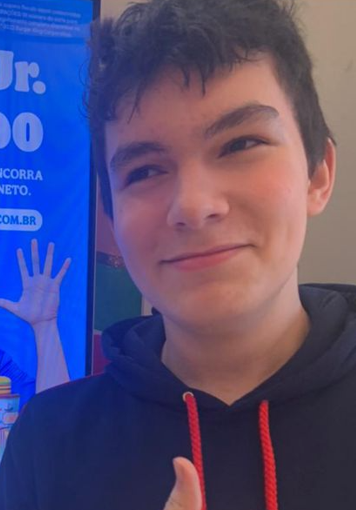

Dr. Gustavo Bostelmann combina ciência de ponta com uma visão profunda do seu organismo para criar protocolos únicos — feitos exclusivamente para você.

"Nutrição não é restrição.
É o ato de nutrir cada célula
do que você verdadeiramente é."
Cada protocolo nutricional que desenvolvemos parte de uma análise profunda e individual. Usamos biomarcadores, histórico clínico e as mais recentes evidências científicas para criar um plano que funciona especificamente para o seu metabolismo — não para uma média estatística.
Avaliação completa com exames laboratoriais e construção de protocolo personalizado baseado em evidências científicas.
Saiba mais →Estratégias metabólicas inteligentes que respeitam seu corpo. Sem dietas extremas, com resultados que permanecem.
Saiba mais →Periodização nutricional para atletas e praticantes. Maximize desempenho, recuperação e composição corporal.
Saiba mais →Abordagem integrativa que conecta alimentação, saúde intestinal, imunidade e bem-estar emocional.
Saiba mais →Manejo nutricional especializado para diabetes, hipertensão, dislipidemia e doenças autoimunes.
Saiba mais →Consultas digitais com o mesmo rigor científico das presenciais. Atendemos todo o Brasil com excelência.
Saiba mais →Análise detalhada do seu histórico clínico, exames laboratoriais, composição corporal e estilo de vida. Entendemos cada detalhe antes de qualquer recomendação.
Desenvolvemos um plano nutricional exclusivo, baseado em ciência e calibrado para sua bioquímica individual. Nada genérico, tudo preciso.
Mudanças sustentáveis acontecem com o tempo. Guiamos cada etapa da sua transformação, adaptando o protocolo conforme seu progresso.
Reavaliações periódicas com ajustes baseados em dados reais. Seu corpo muda, seu protocolo evolui — garantindo resultados duradouros.
Agende uma consulta com o Dr. Gustavo Bostelmann e descubra o que a nutrição de precisão pode fazer por você.